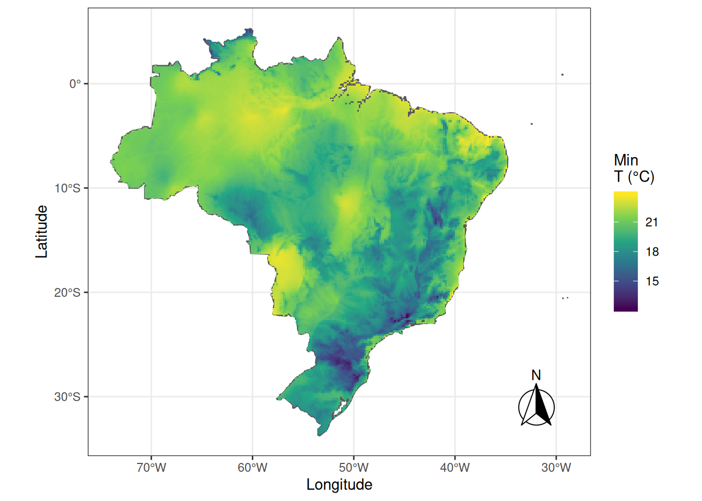
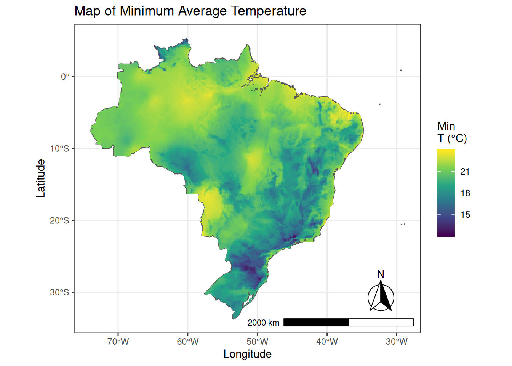
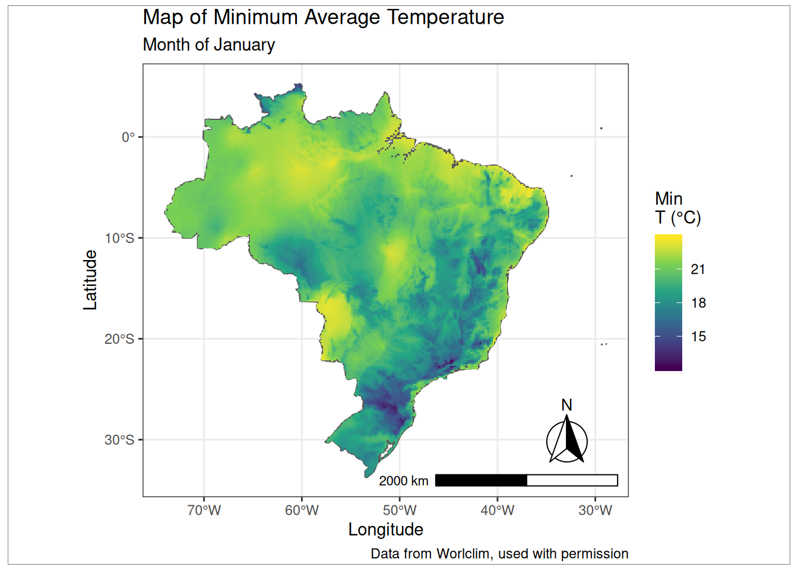

Chapter 5 Projections and Adding Map Elements
5.1 Introduction
In this section we will polish the map for publication.
Maps traditionally have several specific elements that help them convey the information to the user. These include legends, which we’ve already added to our maps, north arrows to orient the user and scale bars and scale to show the scale of the map.
Projections are used to represent the spherical surface of the Earth in a flat plane. Think of wrapping a piece of paper around a ball. It does not wrap evenly, a map is the reverse process, trying to flatten a globe or sphere. Projections help us deal with these distortions. Published maps should always be projected for the area of interest. As the area gets smaller, the projection becomes less important. The data that we downloaded from Naturalearthdata and Worldclim both are in an Equirectangular projection.
In the exercises, first, we will re-project the data to SIRGAS 2000, which is what the Brazilian government normally uses for their maps. Then we will add elements to complete our map including the north arrow, scale bar and text, title, data attribution and a neatline.
5.2 Exercises
5.2.1 Re-project Data
Check the current projections of the data.
## Coordinate Reference System:
## EPSG: 4326
## proj4string: "+proj=longlat +ellps=WGS84 +towgs84=0,0,0,0,0,0,0 +no_defs"To reproject the data we will provide the definition for SIRGAS 2000.
The information for the proj4text comes from https://epsg.io/4674 which has information for several different map projections.
## Coordinate Reference System:
## EPSG: 4674
## proj4string: "+proj=longlat +ellps=GRS80 +towgs84=0,0,0,0,0,0,0 +no_defs"5.2.2 Adding North Arrows and Scale Bars
Using ggspatial we will add a scale bar and north arrow to the map of Minas Gerais to the bottom right corner where there is a bit of space for them.
library("ggspatial")
ggplot() +
geom_sf(data = br_sf) +
geom_raster(data = brazil, aes(x = x, y = y, fill = tmin1)) +
scale_fill_viridis_c("Min\nT (°C)", na.value = NA) +
xlab("Longitude") +
ylab("Latitude") +
annotation_north_arrow(
location = "br",
which_north = "true",
pad_x = unit(0.25, "in"),
pad_y = unit(0.25, "in"),
style = north_arrow_fancy_orienteering
) +
coord_sf() +
theme_bw()## Warning: Removed 37943 rows containing missing values (geom_raster).
Next we will add the scale bar to the bottom right where there is a bit more space and it won’t interfere with the map.
br_tmin <- ggplot() +
geom_sf(data = br_sf) +
geom_raster(data = brazil, aes(x = x, y = y, fill = tmin1)) +
scale_fill_viridis_c("Min\nT (°C)", na.value = NA) +
xlab("Longitude") +
ylab("Latitude") +
annotation_north_arrow(
location = "br",
which_north = "true",
pad_x = unit(0.25, "in"),
pad_y = unit(0.25, "in"),
style = north_arrow_fancy_orienteering
) +
annotation_scale(location = "br", width_hint = 0.5) +
coord_sf() +
theme_bw()5.2.3 Adding a Descriptive Title and Data Source
Adding a title is the same as any other ggplot2 object.
## Warning: Removed 37943 rows containing missing values (geom_raster).
It is always a good idea to credit the sources of the map data, especially if it is not your own.
labs() has options for subtitles, which can be useful, but also a caption argument, which is useful for adding data attributions to your map.
br_tmin <-
br_tmin +
labs(title = "Map of Minimum Average Temperature",
subtitle = "Month of January",
caption = "Data from Worlclim, used with permission")
br_tmin
Neatlines are traditionally part of a map but in many cases nowadays, it is not uncommon to see maps without them. If you wish to add a neatline to your map it is possible to do using the gridExtra and grid packages.
## Warning: Removed 37943 rows containing missing values (geom_raster).## Scale on map varies by more than 10%, scale bar may be inaccurate
5.3 Your Turn
Using the examples above, create a map of a state in Brazil of your choice, add all of the map elements from above to make a complete map of just the state.
Using the datavfor the map of tmin for Minas Gerais you created in the last exercise, create a map of tmin for Minas Gerais and add all the appropriate map elements to it.